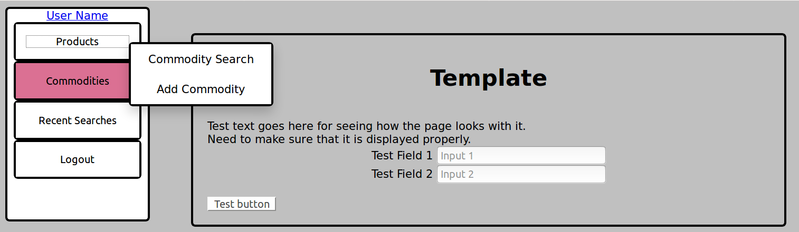
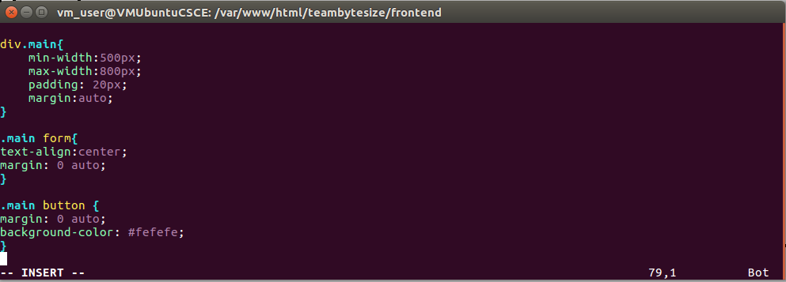
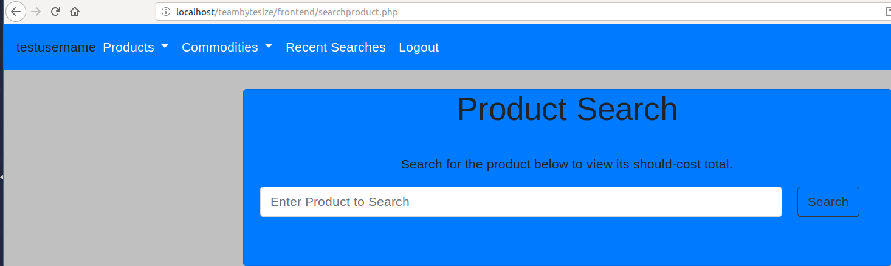

I have a basic layout that I think I can use to test the rest of the site now. W3Schools has been very helpful to get the menus and such working.
This is what I have so far.

This is workable, and I'm probably going to work with it, because I want to get back to working on the pages themselves. However, I can't seem to get the buttons and such to center themselves. This is the CSS Code that is associated with it. The form fields and such will center, but not the button itself.

I'll keep working on the CSS to see if I can fix it, and a few other things. One thing I want to do is create a separate page for the header that I can attach to the top of each page, since the sidebar isn't going to change that much. The one thing I'm not sure about, though, is whether or not I can still use the session data to add the username to the header, which is what I'm currently doing.

For now, I'm going to work on simplifying the design of the older pages, without affecting their function. It'll make things much easier to sort, at least for me.